D+1
Prova socialFecho: pergunta
Um caso parecido com o dela
Sugestão A · A queixa era parecida com a sua?
Material: arte "Pergunta", uma por caso
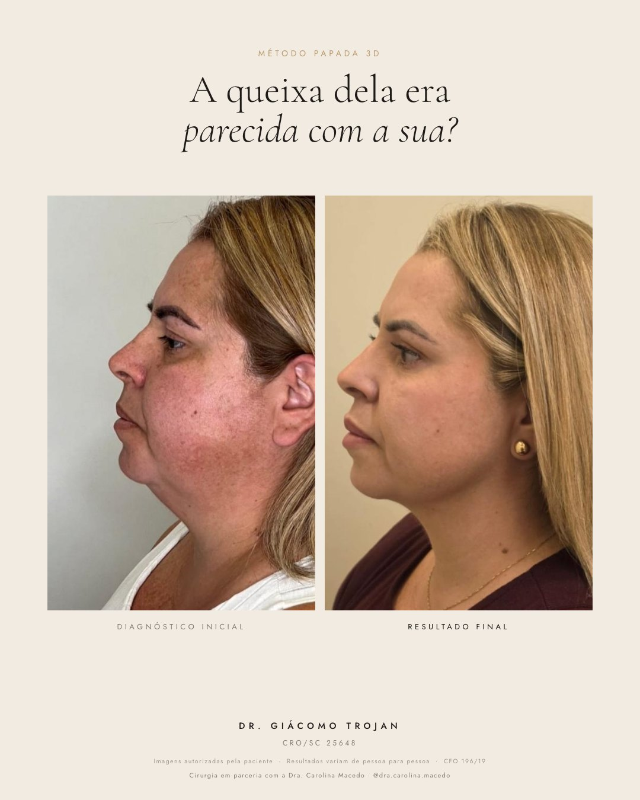
Caso 01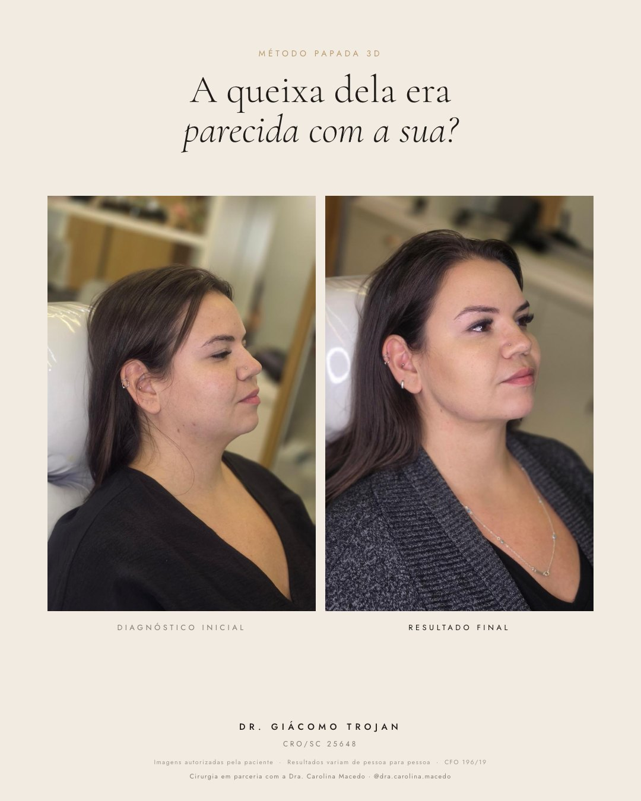
Caso 02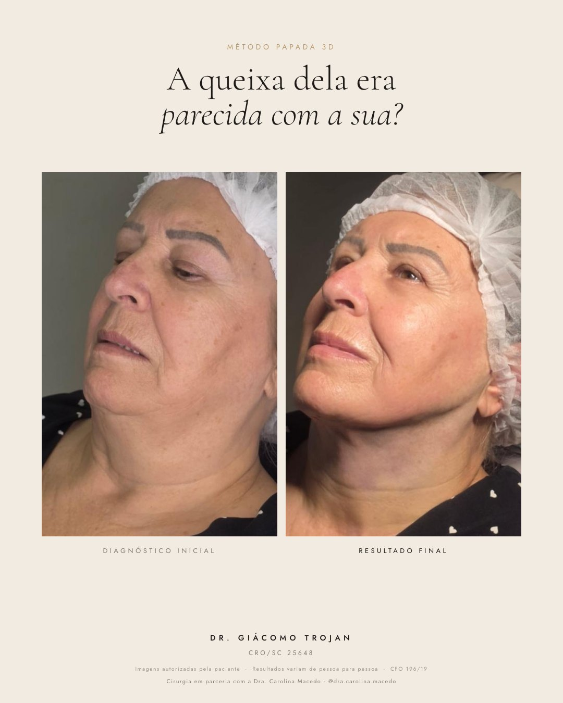
Caso 03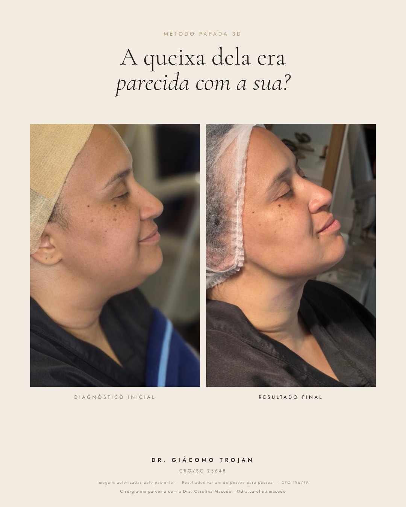
Caso 04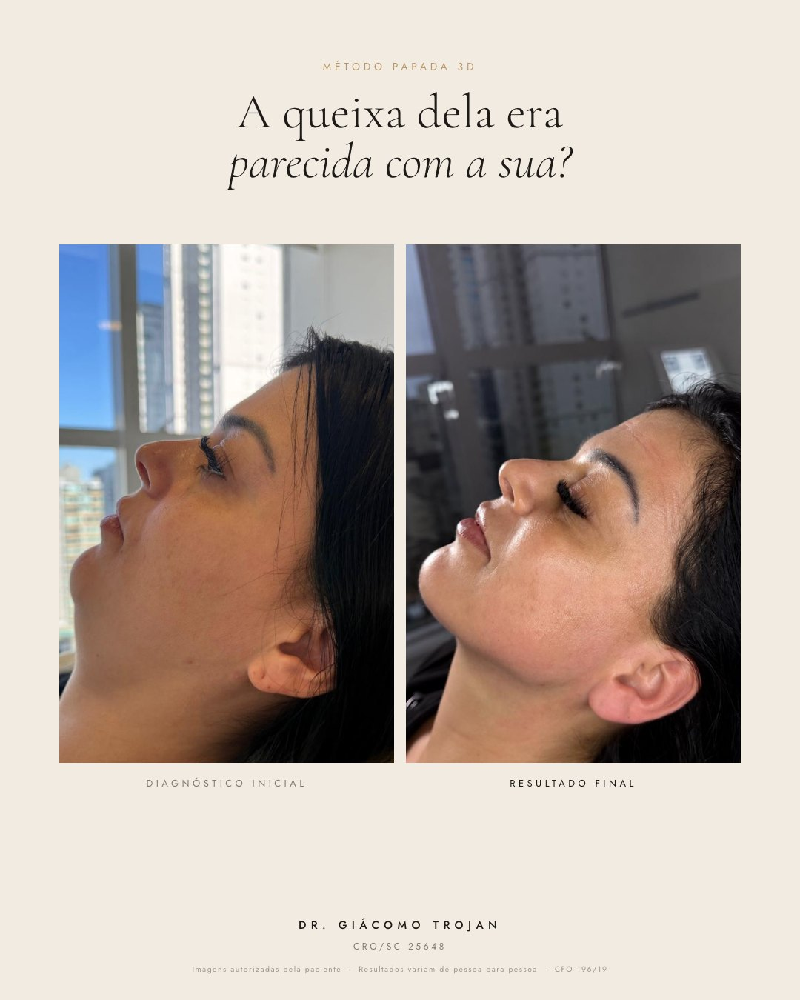
Caso 05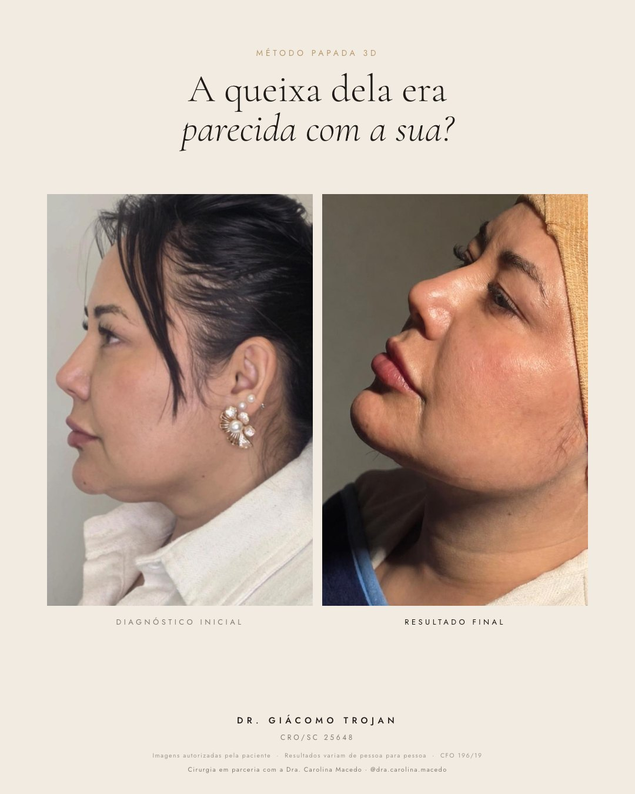
Caso 06[nome], lembrei de você quando vi esse caso. A queixa dela era bem parecida com a que você me contou. Você sente que a sua é assim também?
Sugestão B · Repara na linha
Material: arte "Linha", uma por caso
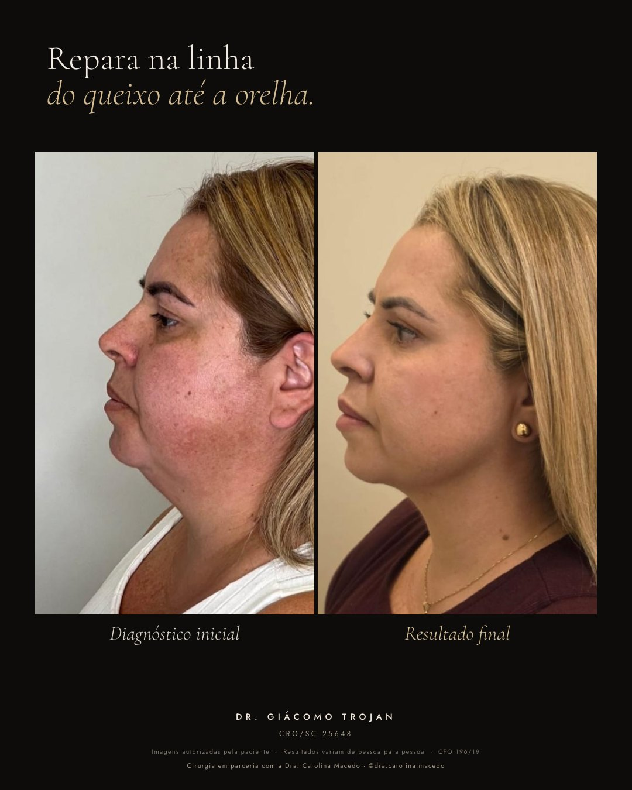
Caso 01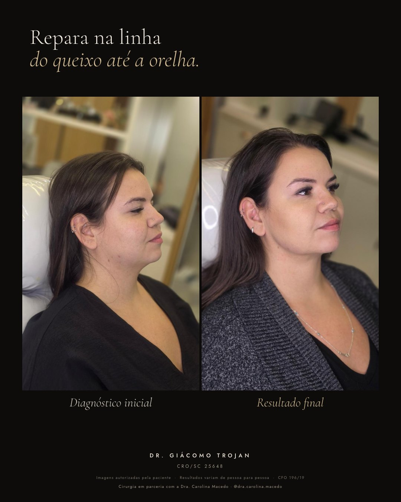
Caso 02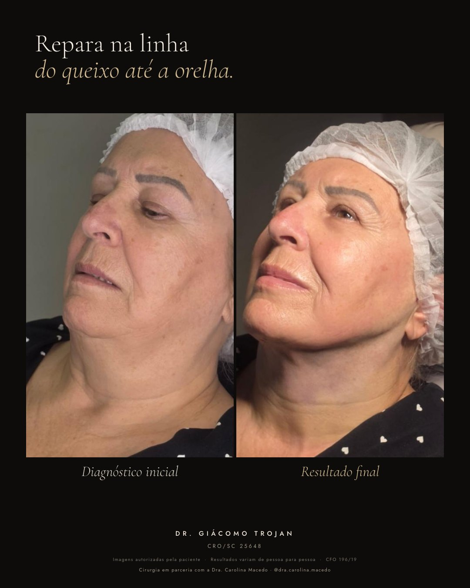
Caso 03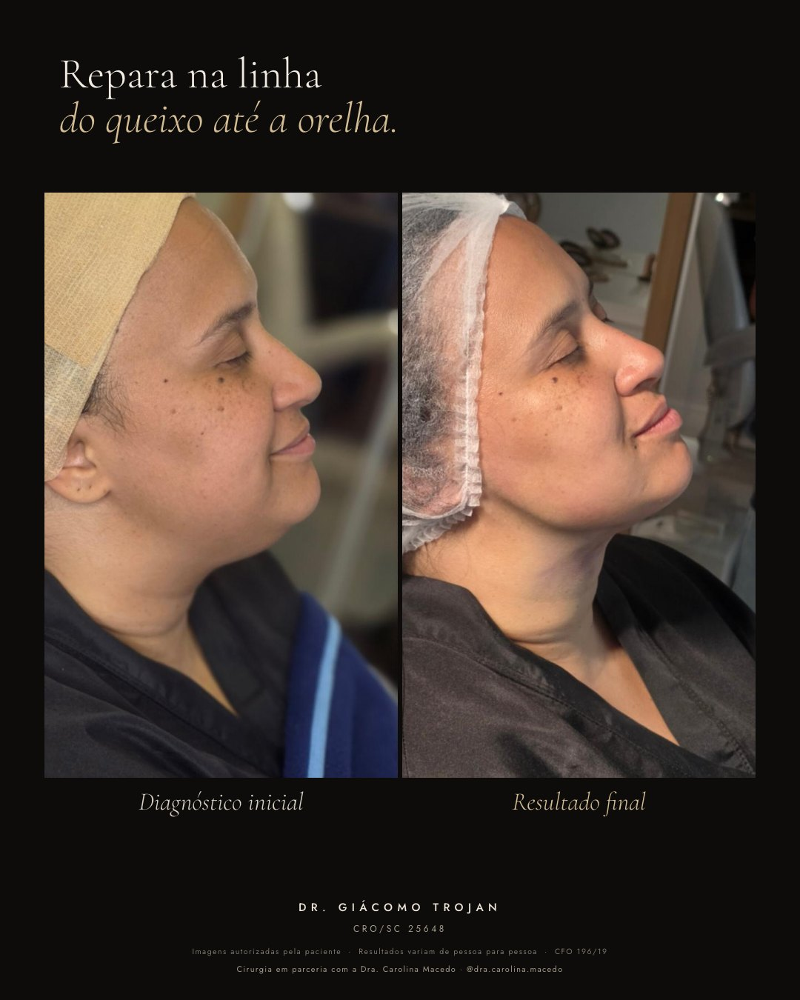
Caso 04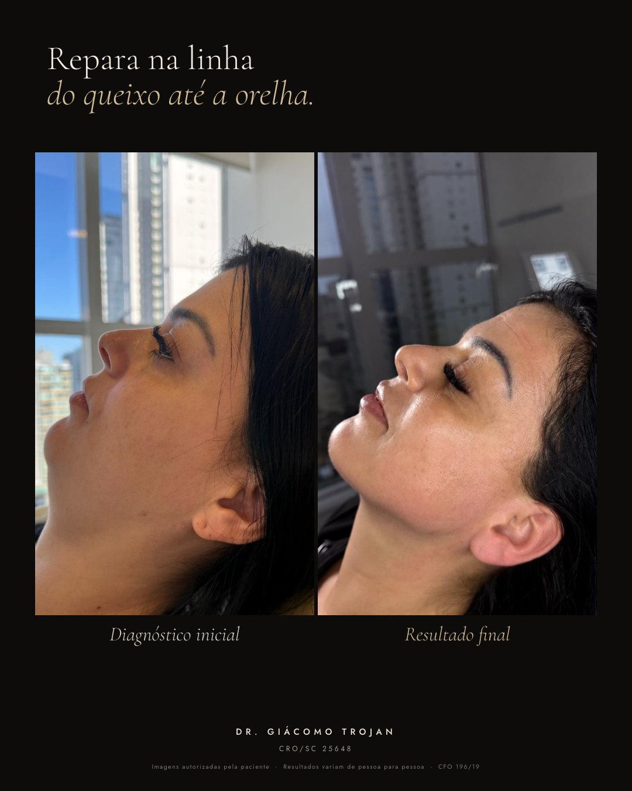
Caso 05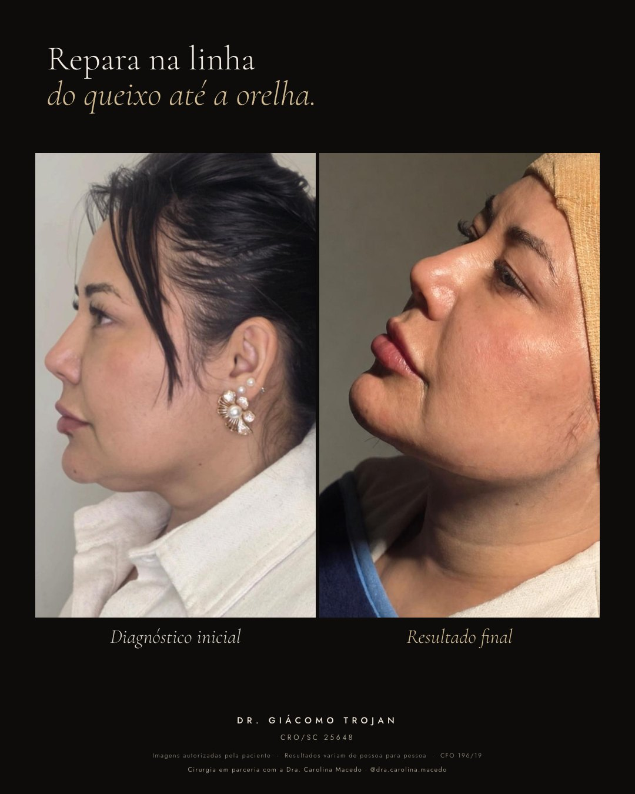
Caso 06[nome], repara na linha do queixo até a orelha nesse caso aqui em cima. É exatamente o ponto que você me falou que te incomoda. Faz sentido pra você?
Sugestão C · Três ângulos
Material: arte "Três ângulos" (caso 01)
[nome], te mando esse caso em três ângulos, porque resultado de papada não pode depender de foto boa 😊 Qual desses ângulos mais te incomoda no seu rosto hoje?